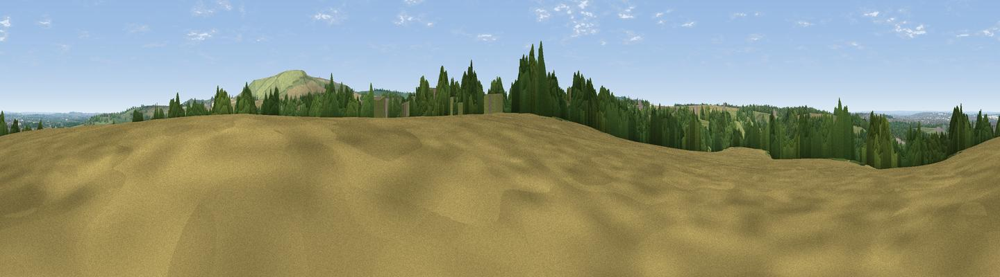

Plough Hill
#25820 in England · top 50% of its area beats it · near ChiseldonWhere it is
The exact computed spot (SU 18963 80263). Click the marker for map links.
The view, rendered

A 360° render of this exact spot computed from the terrain model, tree cover and land cover — summer colours, afternoon light, calibrated against photographs of famous viewpoints. Real trees, hedges and buildings will differ in detail.
The panorama
Grey silhouette: terrain skyline in each direction (720 bearings, Earth curvature and refraction included). Dashed green: skyline with trees (+15 m) and buildings (+8 m) as obstacles. Blue strip: how far the ground is visible on each bearing.
Where the view opens
Wedge length = distance to the farthest visible ground on that bearing (vegetation-aware). Rings at 10, 25 and 50 km.
What fills the view
34% cropland · 34% grassland · 24% woodland · 7% built-up
Angular shares of the visible panorama (visual magnitude), not map area. Landscape diversity 0.56 (0–1 Shannon).
Key numbers
More beautiful places nearby
The staircase of upgrades: each row has a higher view potential than everything closer. Driving times are estimates from straight-line distance, calibrated against real road routing — check an actual route before setting out.
| Place | Direction | Drive | Score |
|---|---|---|---|
| Viewpoint near Liddington | ESE · 2 km | ~5 min | 73.4 |
| Viewpoint near Liddington | E · 3 km | ~6 min | 74.4 |
| Viewpoint near Woolstone | ENE · 12 km | ~23 min | 76.7 |
| Martinsell viewpoint | S · 16 km | ~29 min | 77.3 |
| Viewpoint near Nympsfield | WNW · 45 km | ~65 min | 77.5 |
| Viewpoint near Leckhampton | NNW · 45 km | ~65 min | 77.8 |
| Painswick Beacon | NW · 45 km | ~65 min | 79.6 |
| Viewpoint near Great Witcombe | NW · 45 km | ~66 min | 80.5 |
51.52097, -1.72808 · source: osm peak · position refined by local search. Computed location — check access rights before visiting.